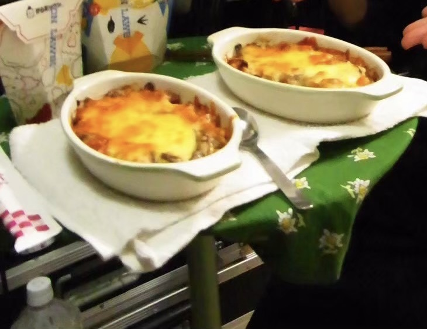

Lasagna

Description
Lasagna refers to both the wide, flat sheets of pasta
and the traditional Italian baked dish made with them.
Ingredients
- Sugar a pinch
- Pepper a little
- Ground mixed meat
- Salt Appropriate amount
- Olive oil Appropriate amount
- Basil Appropriate amount
- Shredded cheese 80g
- White sauce 2
- Lasagna sheets 6 sheets
- Pasta sauce/Tomato & Garlic 400g
Steps
- Heat olive oil in a frying pan, add the ground meat and saute,
then add the pasta sauce and sugar and simmer briefly. Season with salt and pepper.
- Grease a heatproof dish with olive oil and spread a thin layer of [1].
Place two lasagna sheets side by side, then layer with [1] and white sauce.
Repeat this process twice, and finally sprinkle with shredded cheese.
- Bake in a preheated oven at 180°C for about 25 minutes, or until the surface is golden brown.
Top with basil and serve.
Home